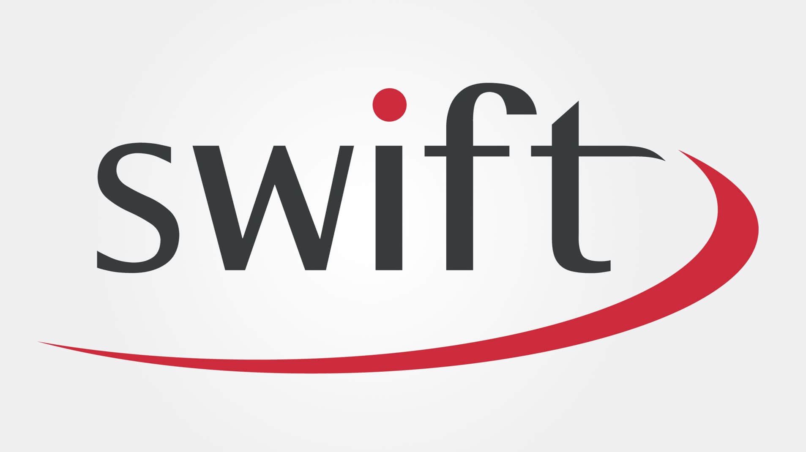

Chiropody and Podiatry
Please choose an option below:
Verrucae
Verrucas are warts located on the feet, caused by viral infection.
We now offer Swift microwave therapy for verrucas.
Swift microwave therapy is the most effective treatment available and is the current gold standard. Treatment is fast and requires no anesthetic.
Swift Treatment Prices
A course of treatments is carried out over 3 appointments, spaced 3-4 weeks apart.
Initial treatment: £400
Additional appointments: £38, or £63 if additional treatment is needed.
Further information on Swift microwave treatment can be found at their website.
Fungal Nail Infections
Fungal nails appear thick, brittle and discoloured
As the infection resides on the skin under the nail, most topical treatments have low success rates - the lacquer cannot penetrate the thick nail.
Traditionally it has been difficult to test for presence a fungal nail infection, though recently a 5 min test has been developed. It is available at our clinic at a cost of £40.
The Lunula Treatment of Nail Infections

We now offer laser treatment of fungal nail infections.
The Lunula treatment involves a cold laser. The safe and painless treatment poses none of the risks and harmful side effects of oral anti-fungal medications.

Treatment causes no side effects and no recovery time is required, meaning you can go straight back to normal activities
The Lunula system has a 97% success rate.
Laser Treatment Prices
Initial treatment: £300
Following three weekly treatments: £36 each
Three monthly follow up: £42
General Chiropody
We run a chiropody clinic at our Bridge Street practice 6 days a week and can also offer home visits and visit various Nursing Homes in and around the Taunton area.
We have 4 practitioners all of whom have completed a 3 year, full-time course and are HCPC registered. We are licensed to use local anaesthetic as necessary. Made-to-measure insoles and appliances can be made on-site.
We are able to treat and offer relief for all the common foot complaints including:
- Fungal infections (e.g. Athelete's foot)
- Thickened toe nails
- Corns, warts, varrucas, blisters and calluses
- Hard, dry, or flaky skin
- Heel pain
- Sprains, dislocations and fractures
- Diabetic ulcers
- Plantar fasciitis
- Club foot
We are able to refer patients for further investigations should it be necessary.
Our aim is to give professional service and comfort.

General Chiropody Prices
Standard chiropody treatment or consultation: £38
Home visits: in Taunton £44, outside Taunton £50
For insoles, casted orthotics, strapping, anaesthetic injections, toenail removal and other treatments, please ring for current prices.
Dermal Filler
As we get older we can loose our natural fatty pads within our feet, leading to corns and pain. Chris, our specialist podiatrist, is able to introduce dermal fillers into the balls of the feet to provide cushioning to both alleviate pain and treat corns.
Please download our Dermal Filler leaflet, or book a consulation for further information.
Dermal Filler Prices
Dermal Filler initial consultation: £36
Dermal Filler treatment: £350 .
Biomechanical Assessment
What is a Biomechanical Assessment?
As we stand, walk or run our body will sometimes compensate for any anomalies caused by asymmetry. These compensations will put muscles, joints, ligaments and tendons under strain. Over time these may become inflamed or injured. A Biomechanical Assessment is an examination of the lower limb. It looks for any underlying causes of foot, ankle, knee, hip and back pain. It normally takes around 1 hour and is carried out by your podiatrist. You will need to bring shorts to change into so we can see your knees. Bringing footwear that you usually wear daily is also helpful.
What does an initial Biomechanical Assessment Include?
Our assessment includes a static (weight and non weight bearing) and a dynamic (walking or running) assessment. In order to understand what is happening during walking or running, you may be videoed. This can be played back in slow motion and paused so we can fully observe the way you walk. Sometimes, as part of an initial assessment, if clinically appropriate, clinicians may give a pair of trial orthotics in order to assess the efficacy of orthotic based treatment. Progression onto permanent orthotics is not always required. If permanent orthotics are found to be useful, this will be at further cost. If orthotics are not found to be useful, we may prescribe exercises, stretching regimes, strapping or shoe advice.

Initial Biomechanical Assessment: £155
What does a Follow Up Biomechanical Appointment include?
A follow up appointment is given to assess the efficacy of the treatment that was provided in the initial appointment. This will be, on average, 30 minutes long.
If a trial pair of orthotics were issued in the initial appointment and on follow up, they need minor adjusting, this will cost up to £45.
If on follow up, you would like a second pair of the orthotics given to you at the initial appointment, this will cost £65.
If on follow up, the trial pair worked well but a stronger pair would be beneficial, this will cost £75.
If on follow up, an even stronger pair of orthotics is necessary, a cast/scan will be done; costing £55. These casted orthotics will then cost £265.
The type of orthotic and treatment given is at the discretion of the clinician. This is because each persons gait will need a different level of care, correction and control and therefore for some persons 'softer' orthotics are better than 'stronger' orthotics and visa versa. We will be sure to discuss all options with you.
Presciption Sandals
Sometimes, it is hard to wear orthotics within summer shoes. Now, by sending your cast to a bespoke sandal or flip-flop maker, your orthotic can be made as part of the shoe, making orthotics easy to wear, even in Summer!